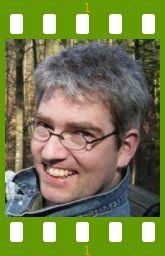

People of openSUSE: Klaas Freitag

The ‘People of openSUSE’ team had the pleasure to interview Klaas Freitag – a Novell employee working as an architect in the department responsible for the Build Service, and an active KDE contributor being a KDE e.V. board member.
- Nicknames: Klaas, freitag, drago, dragotin
- Homepage: not yet
- Blog: not yet – still looking for a good “howto blog” ;)
- Favorite season: Summer.
- Motto: Ähm…
Please introduce yourself!
I was born in the winter of 69 in Hamburg, Germany. Moving with my parents to Erlangen in the age of 5 I later fell in love with the region of Franconia where it luckily happened that S.u.S.E. was founded in.
After some schools and an apprenticeship next to a bench vice and some years working in a hospital I started to study electrical engineering, initially to bridge the time until I really know what to do in the future. Luckily enough I got to know a very nice girl in the university so I decided to work hard to stay there ;-)
Tell us about the background to your computer use.
I got addicted in the age of about 14 with this machine out of hell. I started programming on that machine because software was very rare. Later on I had a C64 without floppy and later several Atari ST where I started to do GUI programs with the nice GEM.
When and why did you start using openSUSE/SUSE Linux?
In 1999, but before I used the LST distribution for years which I preferred over S.u.S.E. I had to switch to S.u.S.E Linux due to company needs.
When did you join the openSUSE community and what made you do that?
I joined in 1999. I seemed to me like a dream to work for Linux professionally.
In what way do you participate in the openSUSE project?
I am working as an architect in the OPS department at SUSE. The department owns all infrastructure topics and thus the openSUSE Build Service is part of my responsibility. I was part of the Build Service design team from first day on, helped with the guiding principles etc.
What especially motivates you to participate in the openSUSE project?
I really love the idea to open the development of the worlds coolest distribution. There are so many really cool people in the community that I like to get even more in touch with to make openSUSE number one!
What do you think was your most important contribution to the openSUSE project/community or what is the contribution that you’re most proud of?
I think the Build Service interfaces where I was part of the design team was a nice contribution.
When do you usually spend time on the openSUSE project?
Almost whenever I sit in front of a computer.
Three words to describe openSUSE? Or make up a proper slogan!
Open – Green – Cool
What do you think is missing or underrated in the distribution or the project?
Most of us are very technical straight thinking geeks. I think what we miss a bit are some community ‘tie guys’ doing marketing foofoo.
What do you think the future holds for the openSUSE project?
The Best :o) I think with the projects we started under the umbrella of the project we’re really on a very promising way to give back new innovations to the FOSS community.
A person asks you why he/she should choose openSUSE instead of other distribution/OS. What would be your arguments to convince him/her to pick up openSUSE?
This distribution is really high quality and thought-through (well… ;-) ) It is done by really passionate people standing for the ideals of free software. However, usually I try to stand away from these kind of discussions ;-) The most appealing reason probably is: It’s fun…
Which members of the openSUSE community have you met in person?
Oh – quite some at SUSE and some on Linuxtag and aKademy.
How many icons are currently on your desktop?
Standard-openSUSE KDE desktop, but I hardly use them.
What is the application you can’t live without? And why?
bzflag – because I need to let fly something from time to time ;-)
Which application or feature should be invented as soon as possible?
KTP B2B – Knowledge Transfer Protocol Brain 2 Brain, and it’s save variant SKTP B2B. That enables us to easily exchange knowledge about the tons of interesting topics in the FOSS world. Simply connect to others geek brain and get some of his/her expert knowledge :)
Which is your preferred text editor? And why?
Emacs. I try once a year to switch to something different because I am not able to program lisp and whenever I need a change in my configurations I have to run to Huha. That’s no fun ;-) But in short terms: I can not go away from Emacs because the keystrokes are hardwired in my brain.
Which famous person would you want to join the openSUSE community?
Peter Gabriel – volunteering to do the sound theme. Or Colt Sievers of course ;)
Which computer related skills would you like to have?
Being able to foresee the trends of tomorrow.
The Internet crashes for a whole week. How would you feel, what would you do?
No problem with that – I have lots of non internet related ideas and todos as well.
Which is your favorite movie scene?
Buah. No real idea.
Star Trek or Star Wars?
VW Käfer.
What is your favorite food and drink?
Well, there are these lots of breweries around here…
Favorite game or console (in your childhood and nowadays)?
Childhood: In my childhood there haven’t been games on console ;) Nowadays: Soccer, played with my friend Schroech.
Which city would you like to visit?
Too much to mention here.
What is your preferred way to spend your vacation?
Active: Cycling, walking etc. Preferably far away from touristic centres.
Someone gives you $1.000.000. What would you do with the money?
Hmm, I prefer start thinking if that really happens…
If traveling through time was possible, when would we be most likely to meet you?
Medieval times (leo spelling ;) )
There’s a thunderstorm outside. Do you turn off your computer?
No.
Have your ever missed an appointment because you forgot about it while sitting at your computer?
Yes.
Show us a picture of something, you have always wanted to share!
I think no one should miss Adrian in his fantastic Leisure Suit together with his boy group.
{kind=link}
You couldn’t live without…
My wife and my wonderful children.
Which question was the hardest to answer?
The Motto.
What other question would you like to answer? And what would you answer?
What other open source communities are you part of? My answer: KDE